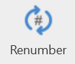
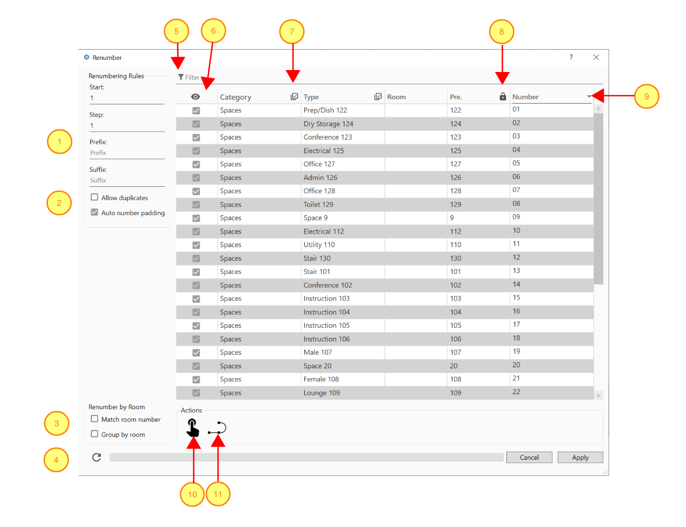
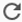
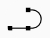

Renumber
With the help of the Renumber command, the Revit user can apply sequential numbering to any set of selected elements and push the generated values into target element parameter.
In Revit:
- In the ribbon, navigate to the NAVIATE tab >> NAVIATE Core panel >> Renumber Rx. command:

- If there is no pre-defined selection, you will be prompted to make a selection and click finish on the Revit options bar.
- The Renumber dialog box pops up listing the selected elements.
- Set your desired renumbering options.
- Click Apply to finish.

Renumber Dialog interface:
- The number options section where a numbering Start, Prefix, and a Suffix can be defined, the Step number will be used to increment the numbers.
- Allow Duplicates/Auto Number Padding
- Checking Allow Duplicates will allow the reuse of Pre. existing numbers (see no. 8).
- Auto Number Padding checks the count to the renumbered elements and applies the appropriate number padding to the number, if unchecked, you can manually define the number of digits for the padding in the Min number length field. A value of 1 will add no padding to the number.
- Options to number elements based on containing rooms:
- Checking the Match Room Number box will give the elements the same number as the room they are in with the prefix and suffix added.
- Check the Group By Room box to add a sub-step to the numbers of elements that exist in the same room, you can define the sub-step to be numerical or alphabetical in the Sub Step field.
- The Refresh button  can be used to refresh the renumbering operation in case there are any issues with updating the UI.
- The Filter field allows you to filter the selected elements visible in the table using comma ( , ) separated keywords.
- The Show/Hide checked elements toggle will hide the unchecked elements for ease of navigation.
- The Group Check toggles in the Category and Type headers will help to quickly check/uncheck elements based on their Category or Type.
- The Pre. column will list pre-existing values for the selected Target Parameter (see No. 9). You can use the Lock toggle to force preserving this value when renumbering.
- The Target Parameter combo-box header allows you to select the parameter that will be populated with the new number. This list will show parameters that are of Text data type, and only the common parameters among the currently checked elements. If no common parameter could be found the header will show “<None>” and no renumbering can be executed at that point. This usually happens when the checked elements belong to a wide variety of categories, you need to refine the group of checked elements, and make sure that the checked elements categories have some common text parameters.
- The Re-order by Pick Selection button will dismiss the dialog temporarily and highlight the checked elements in the current view to help you to manually pick the order of how they are listed for renumbering. Click the elements in the desired sequence, when all the elements that were checked in the dialog are picked, the dialog will reappear with the new order. You can press escape before finishing picking all the elements, the elements that have been picked so far will be ordered first and the rest will keep their original order.
- The Re-order by a Line button will dismiss the dialog temporarily and highlight the checked elements in the current view. Click a detail line or model line(either straight line or spline), the dialog will reappear with the new order. You can press escape before finishing picking all the elements, the elements will keep the original order.
- If your selection includes elements that do not intersect with the line/spline, those elements that do no intersect will automatically be un-checked and therefore will not get renumbered.
Notes:
- If no room containing the element could be detected, the room based numbering options will be ignored for that element.
- All the new numbers showing in the grid are still in memory until the Apply button is clicked, then they will be applied to the elements.
- Hitting Apply will only apply the renumbering to the Checked and Visible items in the grid (use the checkbox column and the Filter field to customize your selection of elements).
- Hitting Apply will save the current dialog options to the model for easy retrieval.